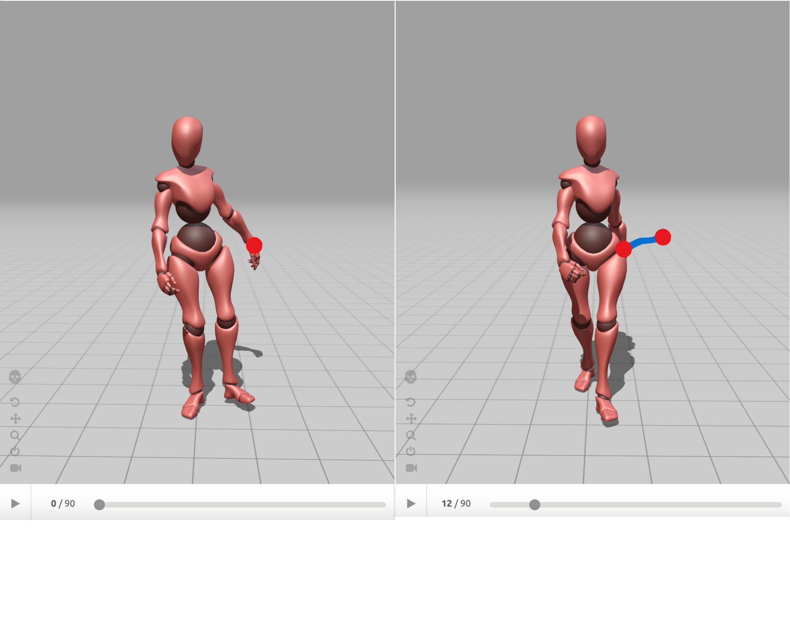
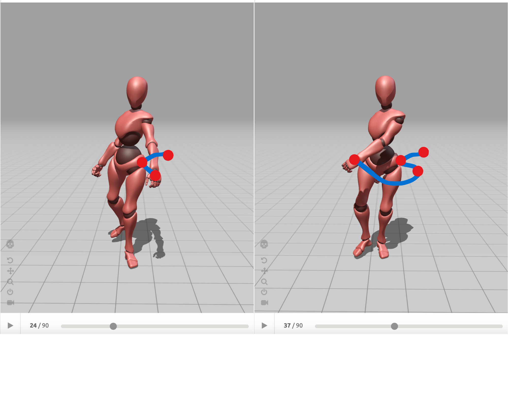
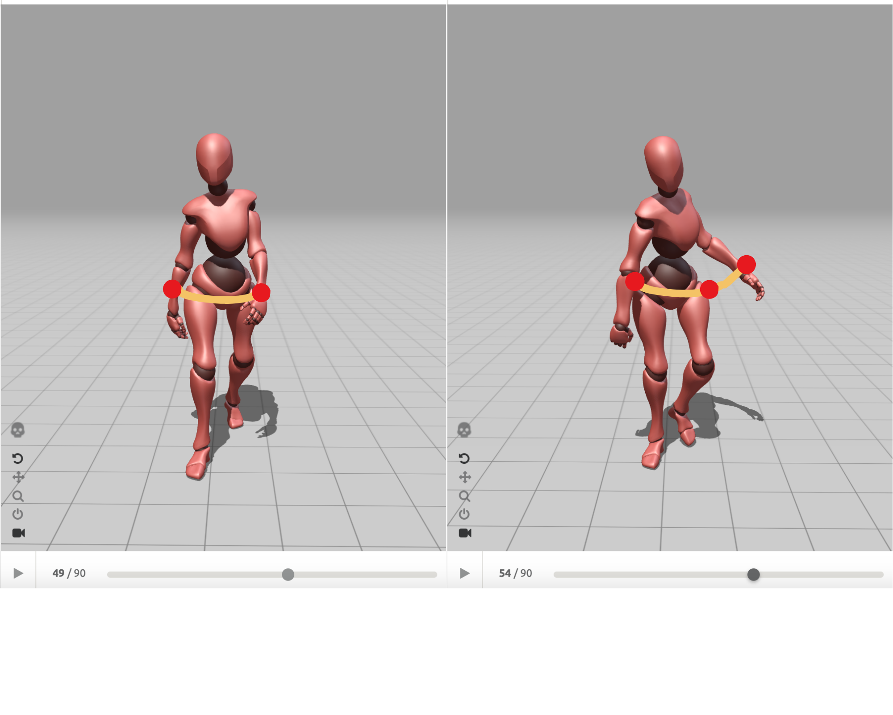
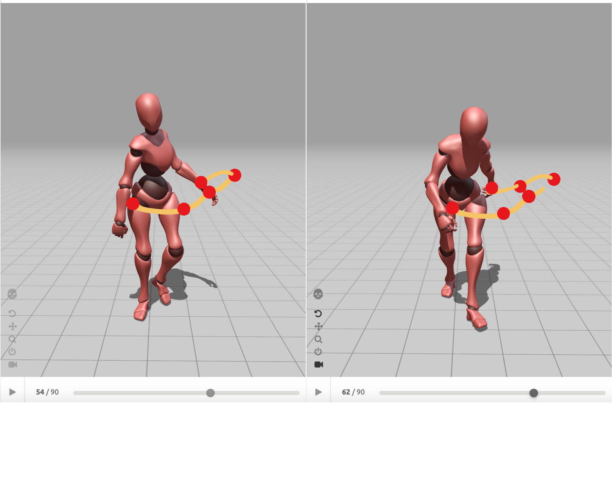
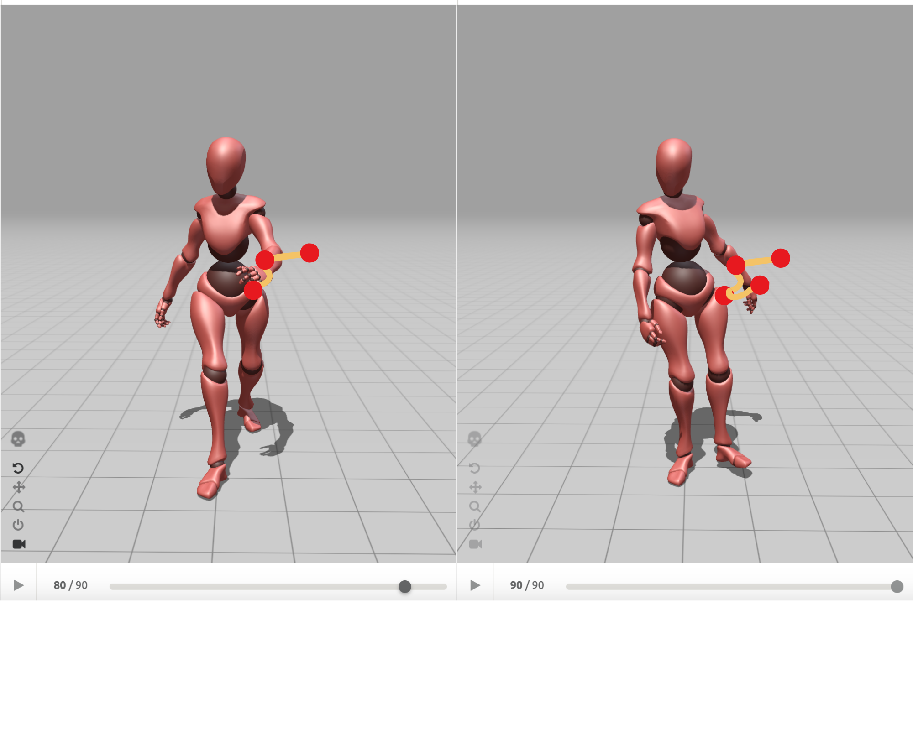

Project type:
Walk Cycle Animation project in Maya.
Project description:
Take one character rig and create two walk cycles in two different ways to show off distinct personalities.
Date:
September 3 - September 17 2024
Role:
3D Animator.
Project highlight:
Reflection:
I get feedback from my instructor that Normal walk feels a little march-y, and could use a little adjustment to be more fluid. Drunk walk cycle has good character to it. Could use a little more iteration and more fluid (but more unsteady) weight shifts.
I encountered some challenges making the left arm swing because I was unfamiliar with animating. To overcome this, I blocked out poses 1, 3, 4, 6, 8, 9, 10, then I blocked out pose 2, 5, 7 and some poses in the middle to create arcs so arm swings can be smooth.




